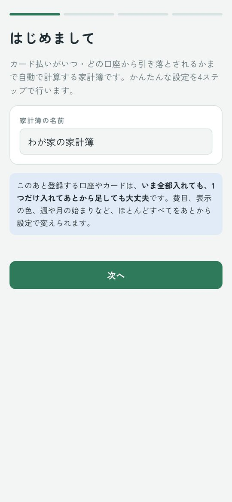
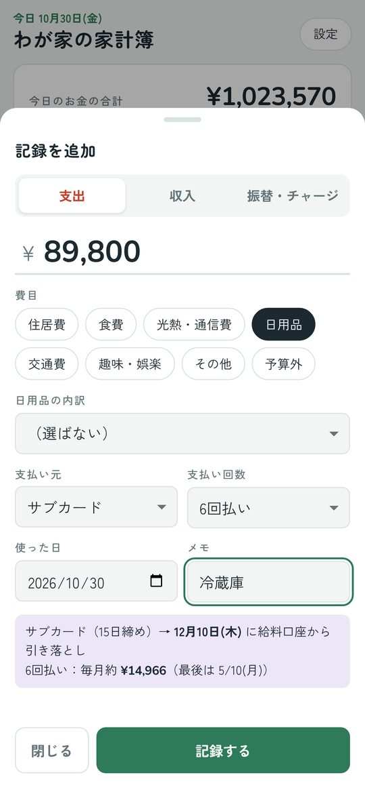
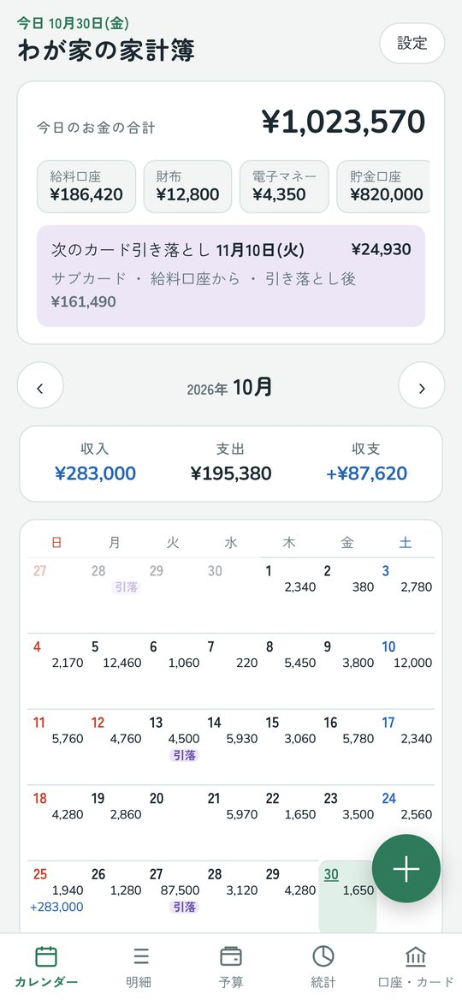
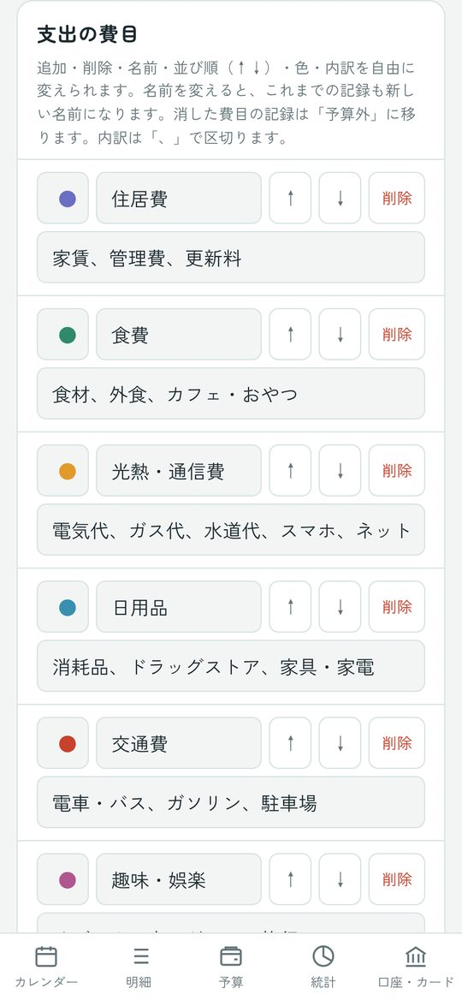

まいにち家計簿
使い方ガイド
カード払いが「いつ・どの口座から・いくら」引き落とされるかまで自動で計算する家計簿です。アプリのインストールは不要で、iPhone・Android・iPad・パソコンで使えます。
1. はじめに：ホーム画面に追加する
この家計簿は、ブラウザで開くWebアプリです。ホーム画面に追加すると、ふつうのアプリと同じようにアイコンから開けます。
iPhone・iPad
- Safariで上のURLを開きます。QRコードはカメラアプリで読み取り、出てきたリンクを押すと開けます。
- 画面の下（iPadは右上）の共有ボタン（□に↑）を押します。
- メニューを下にスクロールしてホーム画面に追加を押します。
- 右上の追加を押します。ホーム画面に「家計簿」のアイコンができます。
- Safariを閉じて、ホーム画面のアイコンから開きます。
Android
- Chromeで上のURLを開きます。
- 画面の上に出る「追加する」を押すか、右上の︙→ホーム画面に追加（またはアプリをインストール）を押します。
- インストール（または追加）を押します。
- ホーム画面のアイコンから開きます。
パソコン（Windows・Mac）
- Chrome・Edge・Safariのどれかで上のURLを開きます。
- ChromeとEdgeは、アドレスバーの右にあるインストールのマークを押すと、アプリとして使えます（そのまま使ってもかまいません）。
2. 最初の設定（4ステップ）

はじめて開くと設定画面が出ます。あとから全部変えられるので、わかるところだけ入れれば大丈夫です。
- 家計簿の名前：好きな名前をつけます。
- お金の置き場所：銀行口座・財布・電子マネー（PayPay、Suicaなど）・貯金用の口座を入れます。いくつでも追加できます。今の残高は空欄でもかまいません。
- クレジットカード：カードの名前、締め日、支払い月（翌月／翌々月）、引き落とし日、引き落とし口座を入れます。何枚でも追加できます。カードがなければとばします。
- 月の予算：費目ごとに、1か月に使っていい金額を入れます。空欄でもかまいません。
3. 記録のしかた

右下の＋を押すと記録の画面が出ます。カレンダーの日付を2回タップしても、その日の記録ができます。
| 支出 | 買い物など。支払い元で、口座・財布・電子マネー・カードから選びます。 |
|---|---|
| 収入 | 給料など。入金先の口座を選びます。 |
| 振替・チャージ | ATMで現金を引き出す、電子マネーにチャージする、貯金用の口座に移す、など。支出には数えません。 |
カードで払ったとき
支払い元にカードを選ぶと、何月何日にどの口座から引き落とされるかが下に表示されます。引き落とし日が土日祝・年末年始なら、自動で次の平日にずらします。
- 分割払い：支払い回数（2〜36回）を選ぶと、毎月の引き落としに分けて入ります。
- 返金：「収入」で入金先に「（カード名）（返金）」を選ぶと、次の引き落とし額から差し引かれます。
- カードで電子マネーにチャージ：「振替・チャージ」で、どこから＝カード、どこへ＝電子マネーにします。
記録を直す・消す
カレンダーや明細の記録を押すと、編集の画面が出ます。削除は2回押すと消えます。
4. 画面の見かた

いちばん上（今日のお金）
- 今日のお金の合計と、口座ごとの残高。押すと、その口座の明細が見られます。
- 次のカード引き落とし：日付・金額・どの口座から・引き落とし後の残高。足りないときは赤で表示します。
- 2か月先までに残高が足りなくなりそうな口座があると、⚠ のお知らせが出ます。
下のタブ
| カレンダー | 日ごとの支出・収入。カードの引き落とし日には「引落」の印。 |
|---|---|
| 明細 | 月の記録の一覧。上のボタンで口座やカードごとに絞り込めます。 |
| 予算 | 費目ごとの残り、1日あたりに使える金額。 |
| 統計 | 費目別・支払い元別の円グラフと、6か月の推移。 |
| 口座・カード | 口座ごとの残高とこれからの動き、カードごとの引き落とし予定。 |
月は‹ ›のボタンか、左右にスワイプして切り替えます。
残高がずれてきたら
口座・カードタブで残高を合わせるを押し、通帳やアプリに出ている今の残高を入れます。その日から計算し直します。
5. 毎月の入出金（自動で入る予定）
給料・家賃・サブスク・毎月の貯金など、毎月決まったお金は設定→毎月の入出金→＋ 追加で登録します。
- 毎月その日に「予定」として自動で入り、残高の見込みに使われます。
- カードで払うサブスクは、支払い元にカードを選ぶと、カードの引き落としに入ります。
- 終わる月（ローンの最終月など）も決められます。
- 予定を押すと、金額を直して記録済みにするや、今月はなしができます。
6. 設定でできること

右上の設定から、ほとんどすべてを変えられます。変えた内容はすぐに反映され、記録が消えることはありません。
- 口座・カード：追加・編集・並べ替え。使わなくなったものは「非表示」にできます（過去の記録は残ります）。
- 費目：追加・削除・名前・色・並び順・内訳。予算の画面の削除からもすぐ消せます（6秒以内なら「元に戻す」）。
- 収入の種類：追加・削除・名前・並び順。
- 表示：ライト／ダーク、テーマの色、背景の色（8色から選ぶか、虹色の丸で好きな色を選べます）、週の始まり（日曜／月曜）、月の始まり日（25日にすると「11月」が10/25〜11/24になります）、開いたときの画面、予算・統計のタブを隠す。
- 記録の初期値：はじめに選ばれている種類・支払い元・入金先。
- お知らせ：何か月先まで計算するか、いくらを下回ったら知らせるか。
7. バックアップと機種変更
バックアップを保存する
- 設定→バックアップを保存を押します。
- iPhone・iPadは"ファイル"に保存→「iCloud Drive」を選んで保存。Androidは「ドライブ」などを選びます。パソコンは「ダウンロード」フォルダに保存されます。
新しい端末に移す・元に戻す
- 新しい端末で家計簿を開き、最初の設定は適当に入れてはじめるまで進めます。
- 設定→バックアップから戻す→保存したファイルを選びます。
- 置きかえるを押すと、記録も設定も元どおりになります。
Excel用（CSV）に書き出すで、記録をExcelやGoogleスプレッドシートで開ける形でも保存できます。
8. よくある質問
記録が消えてしまいました。
Safariで開いた家計簿と、ホーム画面のアイコンから開いた家計簿は記録が別です。いつも使っている方から開いてみてください。iPhoneでは、ホーム画面に追加せずSafariだけで使っていると、しばらく開かなかったときに記録が消えることがあります。必ずホーム画面に追加して使い、バックアップをとってください。
家族と同じ家計簿を見られますか？
できません。記録はそれぞれの端末の中だけに保存されます。
銀行やカードと自動で連携できますか？
できません。記録は手で入力します。そのぶん、ログイン情報などを預ける必要はありません。
入力したデータはどこかに送られますか？
送られません。記録はすべて、お使いの端末の中だけに保存されます。
ネットにつながっていなくても使えますか？
一度開いたあとは、オフラインでも使えます。
引き落とし日が実際とちがいます。
設定→カードを押して、締め日・支払い月・引き落とし日・土日祝の扱いを確認してください。変えると、これまでのカード払いもすべて計算し直します。
残高が実際とずれました。
口座・カード→残高を合わせるで、今の残高を入れ直してください。
「新しいバージョンがあります」と出ました。
更新するを押すと新しいバージョンになります。記録はそのまま残ります。
口座やカードが削除できません。
記録で使っているものは、過去の記録を守るために削除できません。代わりに「非表示」にすると、選ぶ画面に出なくなります。
最初からやり直したいです。
設定→すべて消去で、記録と設定をすべて消して最初の画面に戻ります（元に戻せないので、先にバックアップをおすすめします）。
お問い合わせ
わからないことや不具合は、ご購入いただいたBOOTHのショップの「ショップにメッセージを送る」からお知らせください。お使いの端末（例：iPhone 15、Android）と、どの画面で何をしたかを書いていただけると、早くお答えできます。